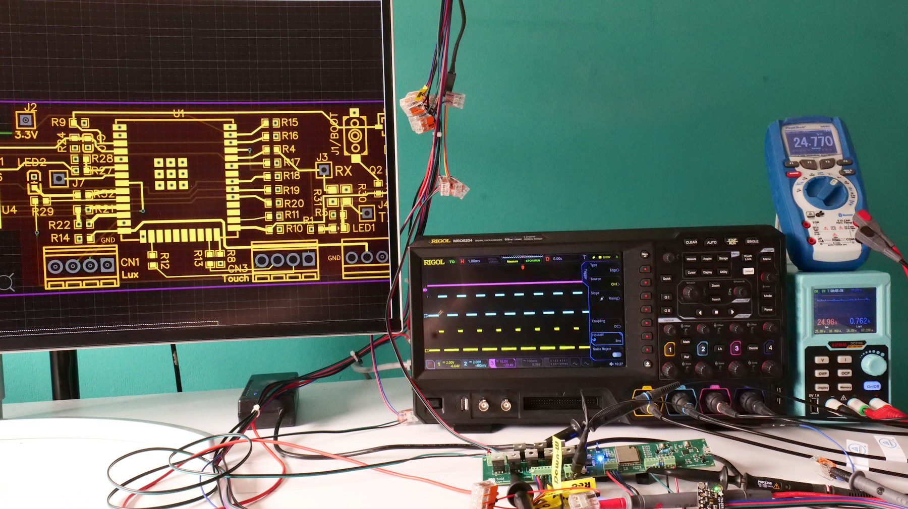
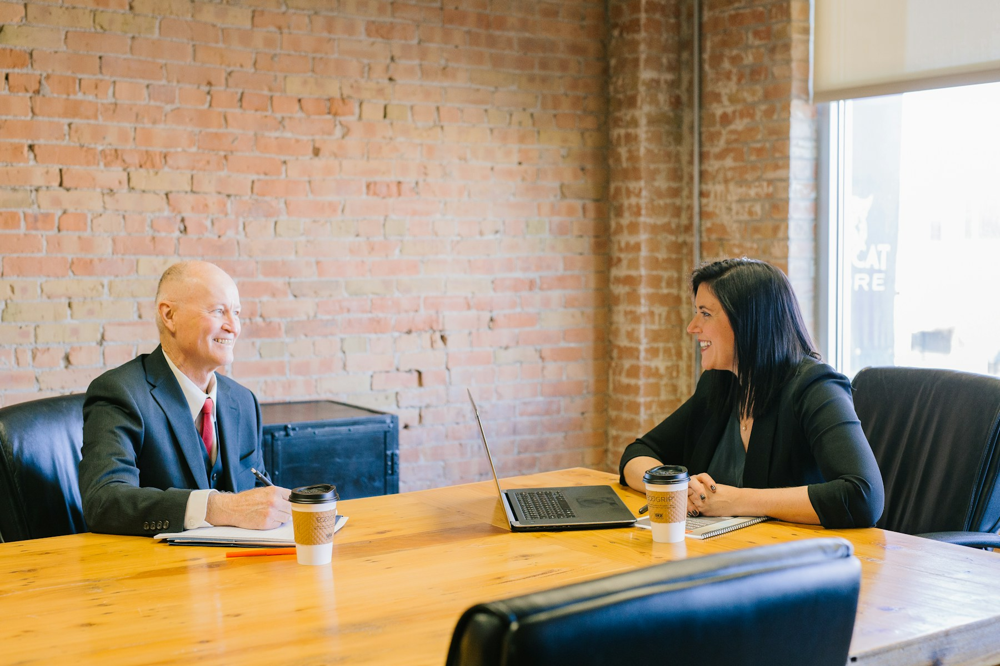
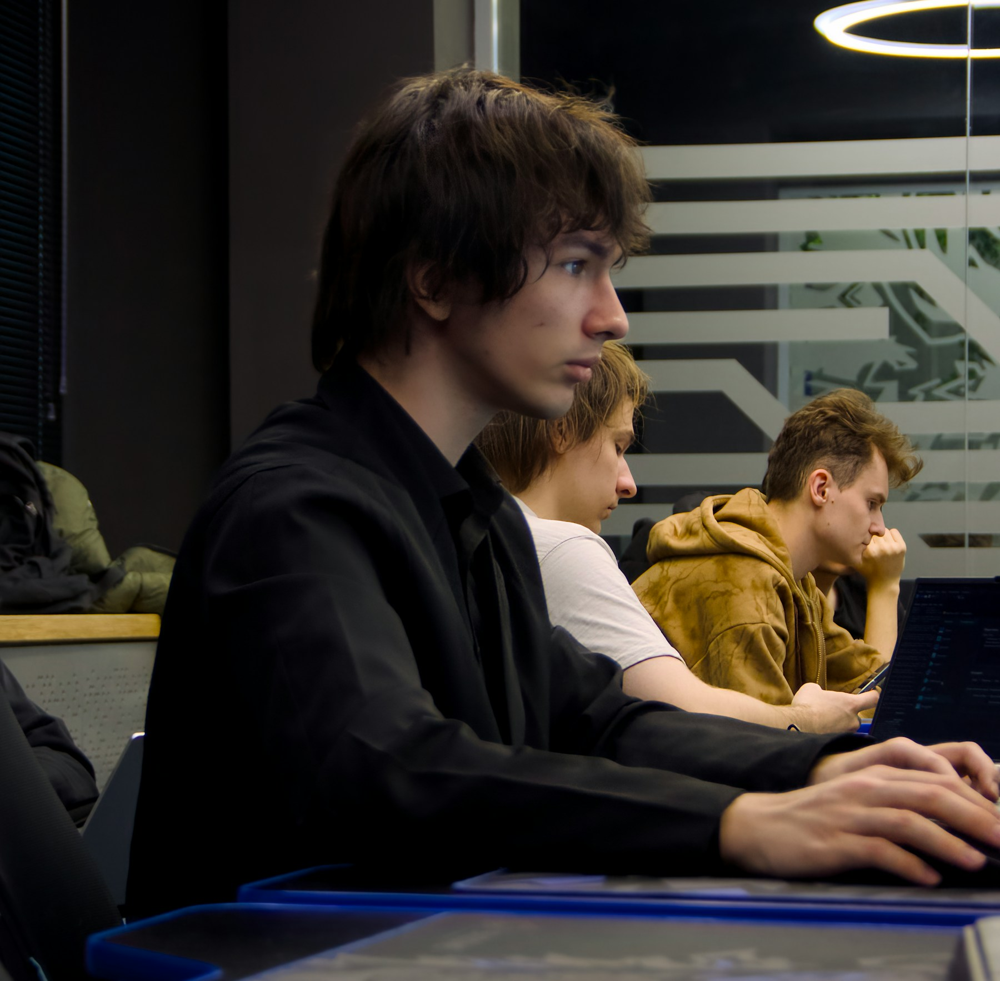

Кар'єрні рішення, підприємницькі повороти, невдачі, нові ринки та команди. Кожна історія має пряме посилання на першоджерело.
Короткі авторські перекази допомагають зрозуміти головний досвід. Повний матеріал відкривається на сайті видання або компанії.
Засновник розповідає про ребрендинг, нову модель маркетплейсу та рішення, які допомагають бізнесу відновлювати зростання.
Джерело: Forbes Ukraine →Розробник із багаторічним досвідом пояснює, чому після переїзду до США вирішив повернутися та продовжувати роботу в Україні.
Джерело: DOU →Співзасновниця Mate academy розповідає, як зміна професійного шляху перетворилася на міжнародний освітній бізнес.
Джерело: EU-Startups →
Засновники пояснюють, як сформували команду, залучили перші інвестиції та перетворили ідею на системний технологічний продукт.
Джерело: AIN →
Історія про випадкову бізнес-ідею, перші експерименти та розвиток вебстудії в умовах кількох послідовних криз.
Джерело: MC.today →
Офіційна історія платформи показує, як перша проста версія продукту виросла у міжнародний маркетплейс для навчання мов.
Джерело: Preply →